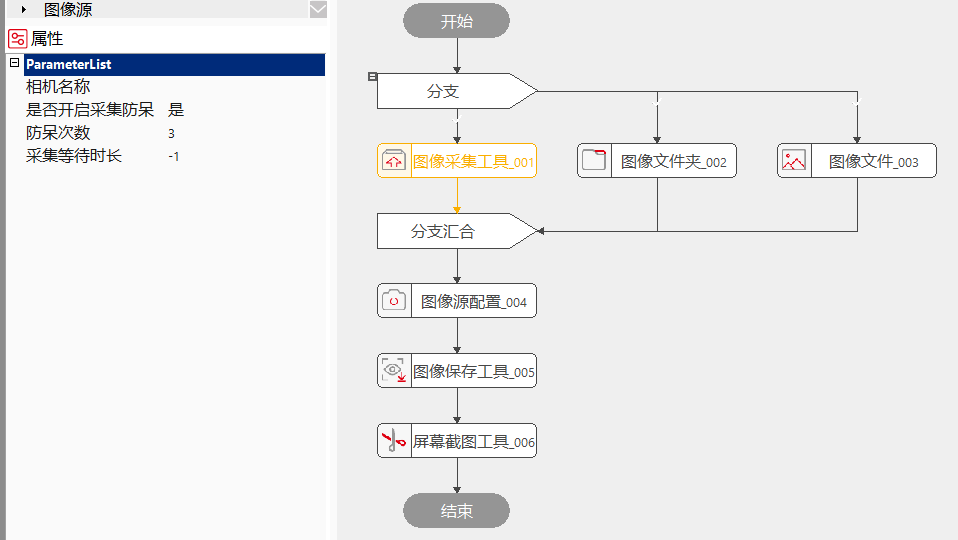

用于与之相连的相机采集图像，如果连接多台相机的话，可以选择相应的相机名称（序列号）进行采集图像。
需要实时获取图像内容或者根据需要动态获取图像内容的场景。
连接好相机，可以设置帧率、曝光、增益、Gamma等参数使用内触发或者硬触发的方式采集图像，当出现采集不稳定的时候可以通过防呆重新采集等。

把图像采集工具放到工程中，点相机名称下拉框可以选择在线的相机，此时会看到使用独立参数的选项，如果获取图像时需要的增益、曝光、Gamma和相机参数不同时可以选择为“是”，如果使用参数获取的效果不大时建议使用独立参数设置为否；如果现场相机连接不稳定可以把“是否开启采集防呆”设置为“是”，如果现场相机稳定可以选择“否”。
| 现象描述 | 解决方法 |
|---|---|
| 相机成像异常，出现黑条纹；采集执行失败、软件崩溃（相机模块）、识别不到相机、帧率达不到标准、图像采集工具卡住、硬触发采图出现黑图串图等现象； | FAQ |
| 采集不稳定掉线 | 1、检查相机连接；2、开启防呆； |
| 参数名称 | 参数说明 |
|---|---|
| 相机名称 | 采集图像的相机的名称，又称序列号。 |
| 是否使用独立参数 | 如果不使用独立参数，会按照相机初始的参数进行图像采集，选是的话，需要手动设置增益和曝光时间。 |
| 增益 | 使用独立参数时，相机的增益，单位为分贝（dB）。 |
| 曝光 | 使用独立参数时，相机的曝光时间，单位为毫秒。 |
| Gamma | 对比度调整。 |
| 是否开启防呆 | 相机不稳定相机模式和相机状态的设置。 |
| 防呆次数 | 相机不稳定时，纠正连接问题的次数，默认设置为3。 |
| 采集等待时间 | -1为一直等待，大于-1为等待的时间，单位为毫秒。 |
| 参数名称 | 参数说明 |
|---|---|
| 图像数据 | 图像的长宽和像素大小。 |
| 执行结果 | 工具执行结果。 |
| 执行时间 | 工具执行时间。 |
| 输出的图像 | 采集到的图像。 |
参见“\Samples\图像源配置工具.gvp”。